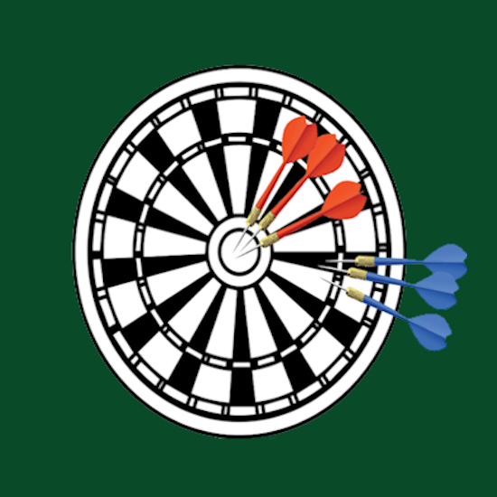

Precision and accuracy are two ways that scientists think about error. Accuracy refers to how close a measurement is to the true or accepted value. Precision refers to how close measurements of the same item are to each other. Precision is independent of accuracy. That means it is possible to be very precise but not very accurate, and it is also possible to be accurate without being precise. The best quality scientific observations are both accurate and precise.
Accuracy and precision are two fundamental concepts that describe the quality of measurements but in different ways. Accuracy refers to how close a measurement is to the true or actual value, essentially indicating the correctness of the measurement. When measurements are accurate, they closely match the real or accepted value, making them reliable in representing what is being measured. For example, if you're weighing an object known to be 10 kg, a measurement reading of 10.1 kg would be considered accurate since it’s close to the true value.
On the other hand, precision relates to the consistency or repeatability of measurements. It reflects how closely multiple measurements agree with each other, even if they don't match the actual value. A precise measurement system will produce similar results under the same conditions every time. For instance, if you measure that object multiple times and consistently get 9.8 kg, 9.8 kg, and 9.8 kg, your measurements are precise, even though they are not accurate. Ideally, a measurement should be both accurate and precise to provide the most reliable and consistent data.
Accuracy refers to how close a measurement is to the true value, while precision is about the consistency of repeated measurements. Accurate measurements hit the target value, while precise measurements are tightly grouped, even if they miss the target. Ideally, you want both: measurements that are consistently close to the true value.
